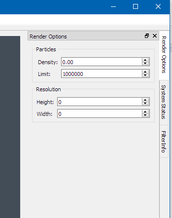

This should be replaced with a help document in the final version. For now it is just some information that describes the current status of the work.
The central widget (gray-blue area) is implemented as a kvs::qt::Screen, which derives from QGLWidget and kvs::ScreenBase. Since there is still no visualization, I just changed the background color and added the kvs::glut::OrientationAxis object to the center of the screen to make sure it is working at least on a basic level.
Fig1. Main Window showing three dock-widgets, and the three dock areas
Fig2. The File menu
Fig 3. The Window menu
Fig4. The Help menu
The Client has a number of small dockable views (widgets). Three views are visible in the default layout, Time Controls, System Status, and Filter Info. Additional views can be enabled by selecting them from the menu “windows > Views”.
Views can be closed by clicking the little x icon in the top right corner of the view.
Fig5. Closing Views
Views can be “torn off” from the main window, or transformed into normal windows by pulling the title bar out of the main window, by double clicking the title bar, or by clicking the little “double window” icon next to the x.
A torn off view in normal window mode can be re-attached as a dock by double clicking the windows title bar. Or by pulling the title bar into a dock area (marked by blue boxes in Fig.1).
A view can be moved from one dock area to another by dragging the title bar towards the edge of the main window. (It can sometimes be a bit tricky to get it to work).
Problem: If the view refuses to dock, it is most likely because there isn’t enough space available. If this is the case, try making the main window bigger, or the view smaller before docking.
A tabbed View Group, is formed when a view is dropped on top of another view.

Fig6. Tabbed View Groups
The view layout is automatically saved when closing the main window. The saved layout is automatically restored the next time the client starts.
To reset the view layout to the original default layout, select the Revert Default Layout from the sub menu Windows->Views
The particle selector tool, is largely unchanged from the original.
Fig4. The Help menu
The Crop tool now has a tool box layout, where the user can select the type of crop they want to use and bring up the options related to that crop style.
Fig7. The Crop Tool
The Transfer Function Editor with its sub dialogs. The Color and Opacity Function Editor sub dialogs are still missing. (But the plan is that they should come up by pressing the |…| three dot button).
Fig8. The Transfer Function Editor
Fig9.(a,b,c,d). The Color Editors
Fig10.(a,b,c,d) The Opacity Editors